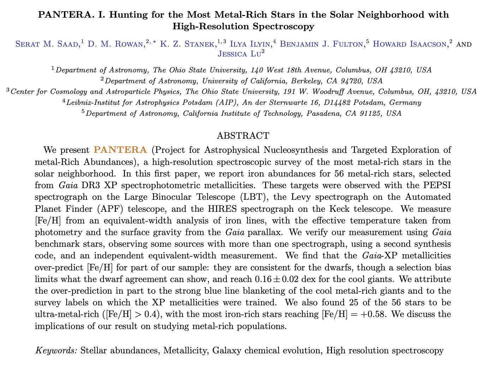

Paper I
PANTERA I
Saad et al. 2026, submitted to the Open Journal of Astrophysics.

arXiv:2607.27328 · astro-ph.SR
Data & code
Equivalent widths and atomic data for all 62 spectra, the adopted parameters and iron abundances, the six-dimensional kinematics with derived orbits, and the equivalent-width-cap sensitivity tables are public. Reduced spectra are available on request.